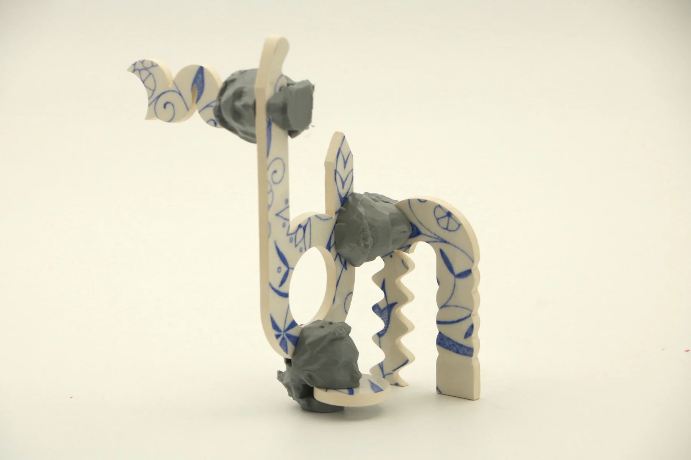
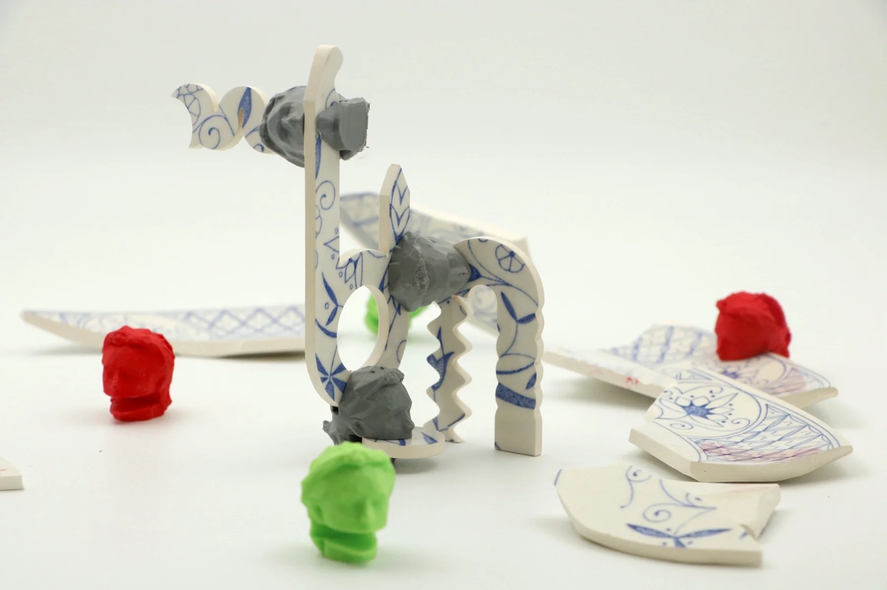
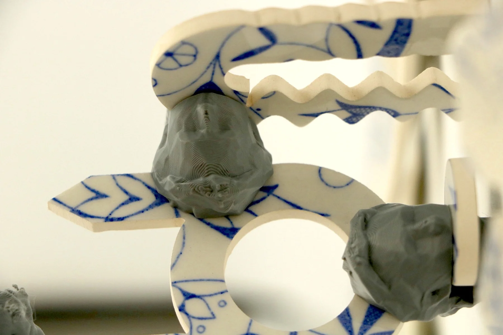
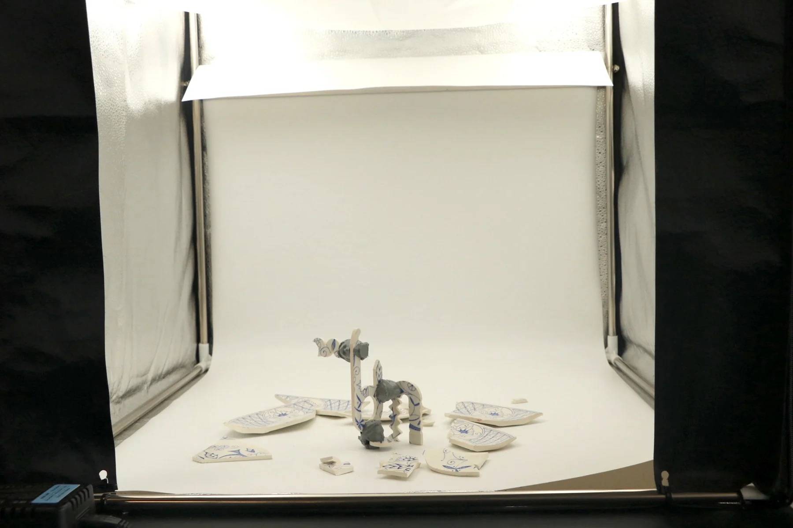

Order in Chaos
A sculptural exploration of modular assembly, repeated fragments and the space between structure and disorder.


01 / The question
How much order does
a structure need?
Order in Chaos explores the relationship between repeated components and unpredictable arrangements. Precisely made elements are assembled into a structure that allows variation and irregularity.
The project uses modular construction as both a making process and a way to investigate the tension between control and disorder.






02 / Outcome
A system with
room for variation.
The finished piece brings patterned surfaces, repeated parts and changing orientations into one structure. Its character emerges from the relationship between the individual fragments and their assembly.
Next project